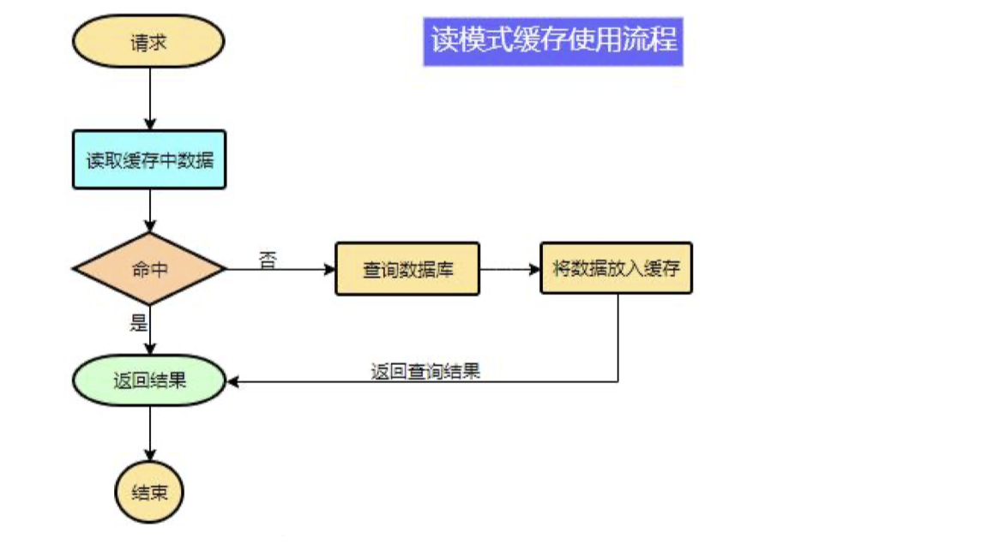
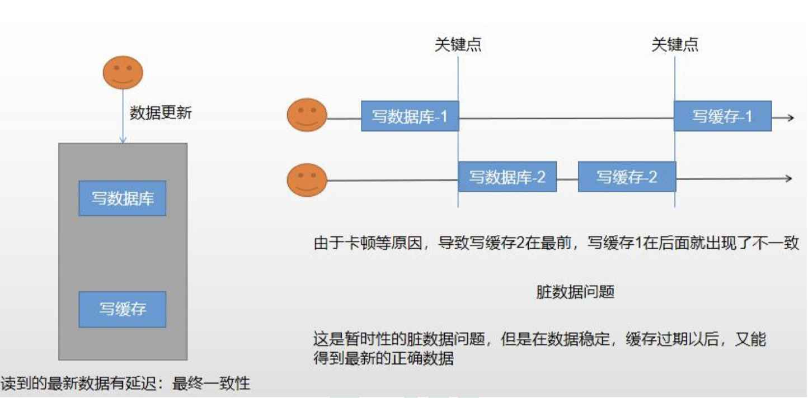
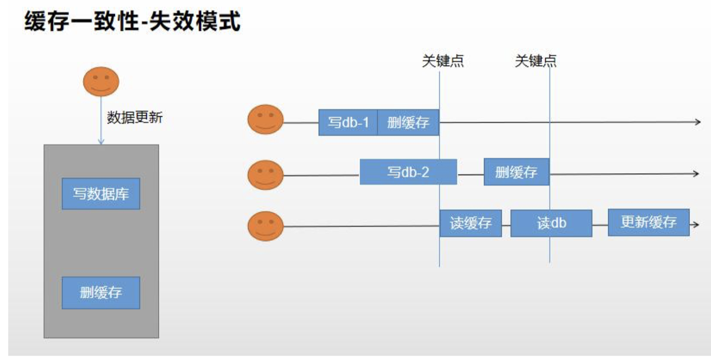
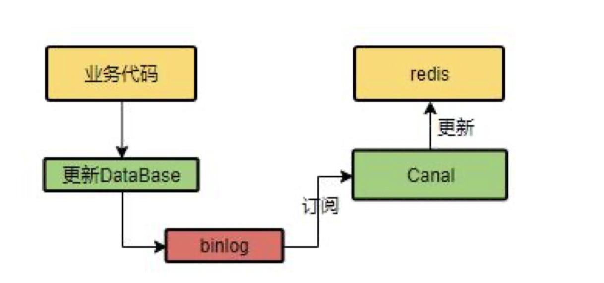

缓存
缓存使用
为了系统性能的提升，我们一般都会将部分数据放入缓存中，加速访问。而 db 承担数据落 盘工作。 哪些数据适合放入缓存？
即时性、数据一致性要求不高的
访问量大且更新频率不高的数据（读多，写少）
举例：电商类应用，商品分类，商品列表等适合缓存并加一个失效时间(根据数据更新频率 来定)，后台如果发布一个商品，买家需要 5 分钟才能看到新的商品一般还是可以接受的。

1 | data = cache.load(id);//从缓存加载数据 |
注意：在开发中，凡是放入缓存中的数据我们都应该指定过期时间，使其可以在系统即使没 有主动更新数据也能自动触发数据加载进缓存的流程。避免业务崩溃导致的数据永久不一致 问题。
整合 redis 作为缓存
1 | 1、引入 redis-starter |
缓存失效问题
先来解决大并发读情况下的缓存失效问题；
缓存穿透
- 缓存穿透是指查询一个一定不存在的数据，由于缓存是不命中，将去查询数据库，但是数 据库也无此记录，我们没有将这次查询的 null 写入缓存，这将导致这个不存在的数据每次 请求都要到存储层去查询，失去了缓存的意义。
- 在流量大时，可能 DB 就挂掉了，要是有人利用不存在的 key 频繁攻击我们的应用，这就是 漏洞。
- 解决： 缓存空结果、并且设置短的过期时间。
缓存雪崩
- 缓存雪崩是指在我们设置缓存时采用了相同的过期时间，导致缓存在某一时刻同时失 效，请求全部转发到 DB，DB 瞬时压力过重雪崩。
- 解决： 原有的失效时间基础上增加一个随机值，比如 1-5 分钟随机，这样每一个缓存的过期时间的 重复率就会降低，就很难引发集体失效的事件。
缓存击穿
- 对于一些设置了过期时间的 key， 如果这些 key 可能会在某些时间点被超高并发地访问， 是一种非常“热点”的数据。
- 这个时候，需要考虑一个问题：如果这个 key 在大量请求同时进来前正好失效，那么所 有对这个 key 的数据查询都落到 db， 我们称为缓存击穿。
- 解决：加锁
缓存数据一致性
保证一致性模式
双写模式

失效模式

改进方法 1-分布式读写锁
分布式读写锁。读数据等待写数据整个操作完成
改进方法 2-使用 cananl


...
...
00:00
00:00
This is copyright.